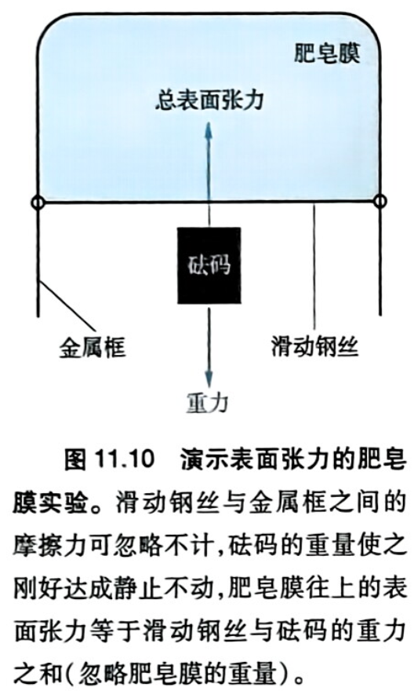
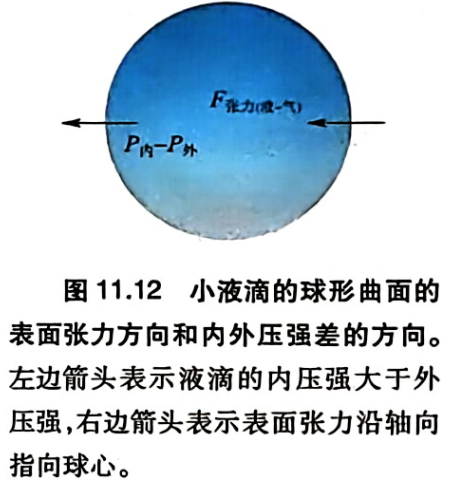
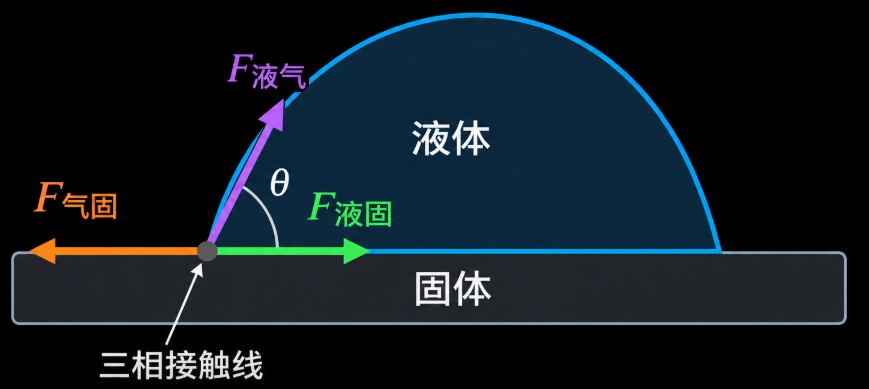
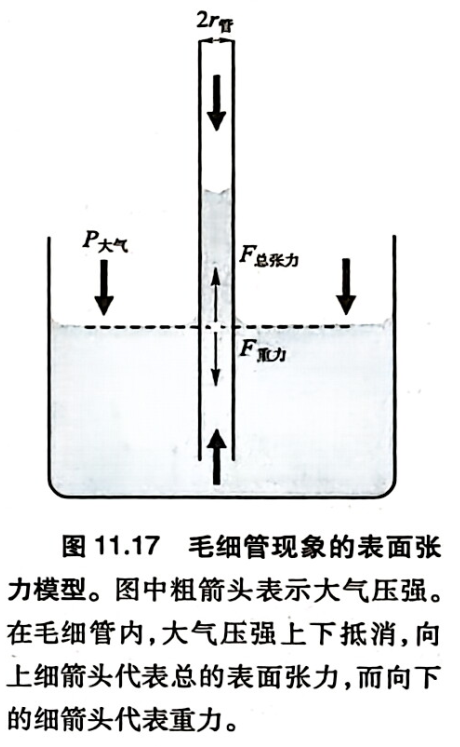
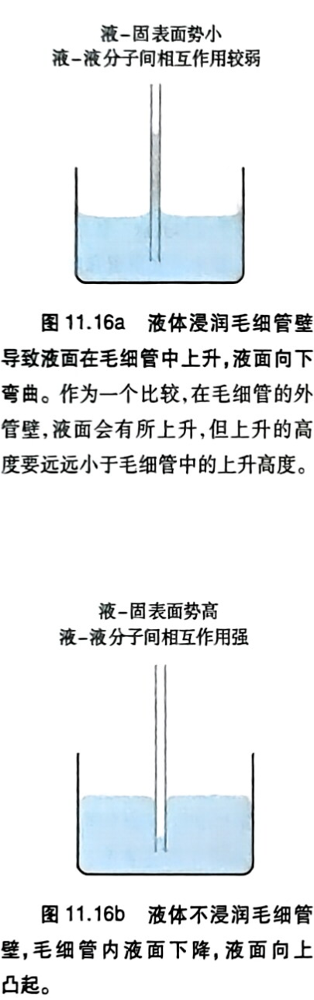
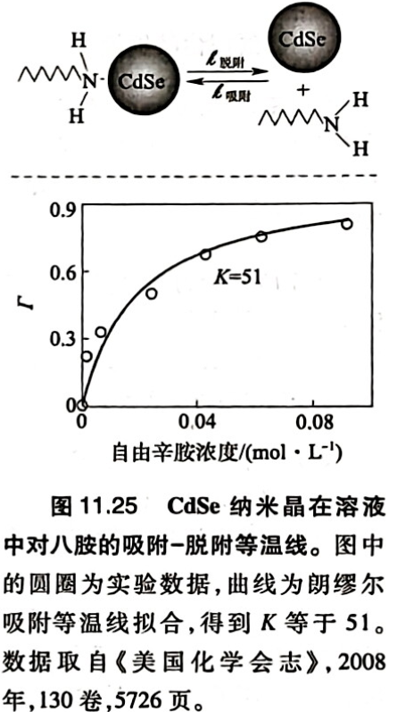
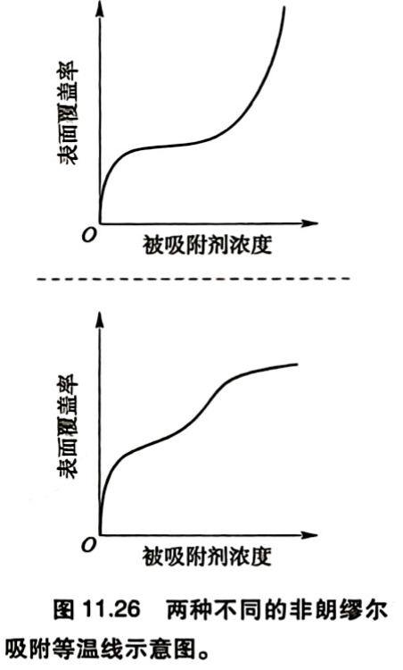

第十一章 表面与胶体：表界面
约 1296 个字 7 张图片 预计阅读时间 19 分钟
第一节 表界面的性质
1.1 表界面的特性
表界面（suface/ interface）为两相界面：液-气界面、固-气界面、固-液界面、晶面（固-气）……
表面的热力学性质：
-
表面分子的化学环境不同于体相
-
表面发生重构
-
表面和体相化学势一致达到终点
对于一个平衡态，\(T,P\) 给定：
\[
\mathrm{d}G
=-S\mathrm{d}T+V\mathrm{d}P
+\sum_i\mu_{i(\mathrm{\infty})}\mathrm{d}n_i
+\sum_j\sigma_j\mathrm{d}a_j
\]
- \(\mu_{i(\infty)}\)：完美体相中组分 \(i\) 的化学势
- \(\sigma_j\)：第 \(j\) 个表面势
- \(a_j\)：表面自由度，表面积
\[
\boxed{
\sigma_j
\equiv
\left(\frac{\partial G}{\partial a_j}\right)_{T,P,n_i,a_{k\ne j}}
}
\]
一个体系的总吉布斯自由能
\[
G=\sum_i\mu_{i(\infty)}n_i+\sum_j\sigma_j a_j
\]
1.2 凝聚态-气态表面
固-气
极不容易制备干净表面，极易有吸附
液-气
a. 高对称性小分子
表面势\(\sigma_j\)
\[
\mathrm{Cl_2(15) < Ar < NH_3 < H_2O(71)< Hg(485) \quad \mathrm{mJ·m^{-2}}}
\]
- 高对称性分子，表面势意味着失去的分子间相互作用（带来的能量/熵），大致\(\sigma_j\propto E^0_{m,分子/液}\approx T_{bp}\)，也与分子摩尔面积有关（暴露在表面的个数）
b. 直链烷烃
\[
\mathrm{CH_3(CH_2)_3CH_3}
<
\mathrm{C_6}
<
\mathrm{C_7}
<
\mathrm{C_8}
\]
- 从左到右稍有增加，均在 \(20\mathrm{mJ·m^{-2}}\)。表面势主要决定于\(\mathrm{-CH_3}\)，大量甲基指向气相，减小分子间作用损失。增加因为部分暴露\(\mathrm{-CH_3CH_2-……}\)。如环己烷表面势大于这些直链烷烃。
c. 伯醇
| \(\mathrm{CH_3OH}\) |
\(\mathrm{CH_3CH_2OH}\) |
\(\mathrm{CH_3(CH_2)_3OH}\) |
\(\mathrm{CH_3(CH_2)_5OH}\) |
| 22.07 |
21.97 |
24.93 |
25.81 |
- 极性/氢键长链有机分子，表面势能主要决定于\(\mathrm{-CH_3}\)。
表面活性剂（一端为甲基，另一端强极性如离子或可形成氢键），通过在表面暴露甲基/疏水基团降低表面势
凝聚相-凝聚相
a. 固-固界面
-
晶体易崩塌为两个固-气界面。
-
非晶固体高分子添加粘合剂
b. 固-液界面: 浸润
c. 液-液界面: 出现分子富集和定向组装。如辛醇-水界面。
第二节 表面张力
2.1 肥皂膜实验

表面张力：单位长度膜产生的径向收缩力
\[
G=2l·F_{\text{张力}}
\]
存在两个气液界面，横杆长度为 \(l\)
2.2 拉普拉斯公式

半径为 \(r\) 的球形液滴，表面积与体积：
\[
a=4\pi r^2,\qquad V=\frac43\pi r^3
\]
\[
\mathrm da=8\pi r\,\mathrm dr
\]
\[
\mathrm dV=4\pi r^2\,\mathrm dr
\]
表面张力收缩使液滴受到向内的合力，由压强差平衡。平衡时，内外压强差所做的功等于增加表面积所需的功。其中表面张力是单位距离的力，做功如下：
\[
(P_{\text{内}}-P_{\text{外}})\mathrm dV
=F_{\text{张力}}\,\mathrm da
\]
\[
(P_{\text{内}}-P_{\text{外}})4\pi r^2\,\mathrm dr
=F_{\text{张力}}8\pi r\,\mathrm dr
\]
拉普拉斯公式：
\[
P_{\text{内}}-P_{\text{外}}=\frac{2F_{\text{张力}}}{r}
\]
液滴半径越小，内外压强差越大
2.3 杨方程

\[
F_{\text{气-固}}-F_{\text{液-固}}
=F_{\text{液-气}}\cos\theta
\]
\(\theta>90°\)，不浸润，即液体不会降低固体的表面势。
第三节 吉布斯方案
从热力学角度处理表面问题，而非力
3.1 吉布斯表面方程
\(T,P\) 给定：
\[
\mathrm{d}G
=-S\mathrm{d}T+V\mathrm{d}P
+\sum_i\mu_{i(\mathrm{\infty})}\mathrm{d}n_i
+\sum_j\sigma_j\mathrm{d}a_j
\]
\[
G=\sum_i\mu_{i(\infty)}n_i+\sum_j\sigma_j a_j
\]
3.2 肥皂膜实验
\(T、P\) 恒定
\[
\left(\frac{\partial G}{\partial x}\right)_{T,P,n_i}
=F_{\text{重力}}
\]
\[
G=\sum_i\mu_{i(\infty)}n_i+\sigma(2lx)
\]
\[
\begin{aligned}
F_{\text{重力}}
&=\left(\frac{\partial G}{\partial x}\right)_{T,P,n_i}\\
&=0+2lx\left(\frac{\partial\sigma}{\partial x}\right)_{T,P,n_i}
+2l\sigma
\end{aligned}
\]
若：
\[
\left(\frac{\partial\sigma}{\partial x}\right)_{T,P,n_i}=0
\]
则：
\[
F_{\text{张力}}=\sigma
\]
实际情况：
\[
F_{\text{张力}}=x\left(\frac{\partial\sigma}{\partial x}\right)_{T,P,n_i}
+\sigma
\]
需考虑表面势是否随面积改变
3.3 小液滴实验
\[
P_{\text{内}}-P_{\text{外}}
=\frac{2\sigma}{r}
+\left(\frac{\partial\sigma}{\partial r}\right)_{T,P,n}
\]
需考虑表面势是否随半径改变
3.4 毛细管

\[
h=\frac{2F_{\text{张力（液-气）}}}{r_{\text{管}}\rho_{\text{液}}g}
=\frac{2\sigma_{\text{液-气}}}{r_{\text{管}}\rho_{\text{液}}g}
\]
管径越小，上升高度越高

不浸润现象如汞，产生液固界面需打破金属键，表面势高。
热力学平衡条件
\[
\left(\frac{\partial G}{\partial h}\right)_{T,P,n}=0
\]
吉布斯自由能可分为：
\[
G=G_{\text{体相}}+G_{\text{表面}}+G_{\text{重力}}
\]
\[
G=\sum_i\mu_{i(\infty)}n_i
-(\sigma_{\text{气-固}}-\sigma_{\text{液-固}})
\int_0^h C_{\text{管}}\,\mathrm{d}h
+\int_0^h \rho gh\,a_{\text{管}}\,\mathrm{d}h
\]
对于非均匀截面的管：
\[
C_{\text{管}}=f(h)
\]
\[
a_{\text{管}}=g(h)
\]
圆管
对于半径为 \(r_{\text{管}}\) 的圆管：
\[
C_{\text{管}}=2\pi r_{\text{管}}
\]
\[
a_{\text{管}}=\pi r_{\text{管}}^2
\]
平衡时：
\[
\left(\frac{\partial G}{\partial h}\right)_{T,P,n}=0
\]
\[
0=-(\sigma_{\text{气-固}}-\sigma_{\text{液-固}})2\pi r_{\text{管}}
+\rho gh\pi r_{\text{管}}^2
\]
\[
\boxed{
h=\frac{2(\sigma_{\text{气-固}}-\sigma_{\text{液-固}})}
{\rho g r_{\text{管}}}
}
\]
考虑三相界面：
\[
\sigma_{\text{气-固}}-\sigma_{\text{液-固}}
=\sigma_{\text{液-气}}\cos\theta
\]
得到同样的结果。
方管
对于边长为 \(L_{\text{管}}\) 的方管：
\[
C_{\text{管}}=4L_{\text{管}}
\]
\[
a_{\text{管}}=L_{\text{管}}^2
\]
平衡时：
\[
\left(\frac{\partial G}{\partial h}\right)_{T,P,n}=0
\]
\[
0=-(\sigma_{\text{气-固}}-\sigma_{\text{液-固}})4L_{\text{管}}
+\rho ghL_{\text{管}}^2
\]
\[
\boxed{
h=\frac{4(\sigma_{\text{气-固}}-\sigma_{\text{液-固}})}
{\rho gL_{\text{管}}}
}
\]
从能量出发的吉布斯方案免去了复杂的受力分析
第四节 表面吸附
4.1 固体表面的等价位点吸附
\[
\mathrm{Site}+i_{(\text{自由})}
\underset{k_{\text{脱附}}}{\overset{k_{\text{吸附}}}{\rightleftharpoons}}
(\mathrm{Site}-i)_{\text{吸附}}
\]
动态平衡：
\[
v_{\text{吸附}}=v_{\text{脱附}}
\]
\[
v_{\text{吸附}}=k_{\text{吸附}}N_{\text{自由}}C
\]
\(C\)为自由被吸附物浓度
\[
v_{\text{脱附}}=k_{\text{脱附}}N_{\text{吸附}}
\]
\[
N_0=N_{\text{自由}}+N_{\text{吸附}}
\]
定义平衡常数和表面覆盖度：
\[
\frac{k_{\text{吸附}}}{k_{\text{脱附}}}
=K
=\frac{N_{\text{吸附}}}{N_{\text{自由}}C}
=\frac{\Gamma}{C(1-\Gamma)}
\]
\[
\Gamma=\frac{N_{\text{吸附}}}{N_0}
\]
\[
\frac{\Gamma}{1-\Gamma}=KC
\]
朗缪尔吸附等温式：
\[
\boxed{\Gamma=\frac{KC}{1+KC}}
\]
\[
C\rightarrow\infty,\qquad \Gamma\rightarrow 1
\]

Langmuir 吸附模型的基本假设
-
固体表面吸附位点数量固定
-
每个位点最多吸附一个分子，形成单分子层吸附。
-
所有吸附位点等价，具有相同的吸附能力。
-
吸附分子之间不存在相互作用。
-
吸附和脱附过程均为基元步骤：
-
吸附速率与气体浓度 \(C\) 和自由位点数 \(N_{\text{自由}}\) 成正比。
-
脱附速率仅与已占据位点数 \(N_{\text{吸附}}\) 成正比。
-
吸附和脱附在恒定温度下进行，速率常数 \(k_{\text{吸附}}\) 和 \(k_{\text{脱附}}\) 保持不变。
4.2 复杂吸附

多层吸附
前段符合单层吸附特征
非等价位点
强吸附先发生
BET模型
开放表面+孔吸附……
第十二章 胶体溶液
第一节 胶体及其物理性质
1.1 胶体
定义：纳米尺寸粒子相对稳定分散在介质中，结构成分相对固定